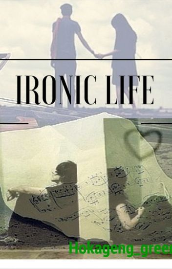

Irony Life
Introduction:
One example of the Irony of life pag dating sa ating so called "crushlife"
Yung crush mo, may crush na iba. Pero yung crush niya may crush ding iba. Nakakainis lang. Ang tanga tanga niya. Manhid syet. E wala eh, ganun talaga. Hindi naman natin pwedeng diktahan ang puso ng isang tao diba?
Anong ginwa ko? Edi wala. Tumanga.... May magagawa pa ba ko? Hmp!
"Bes!!!! May gwapo!!! May nakita akong gwapo!!! Kasama ni Pete. Tropa niya siguro. :( Gwapo niya bes!!!" Campus fair ngayon dito sa Mandell University, kung saan ako nagaaral. Masscom student ako. Si Pete, schoolmate ko siya nung HS, at schoolmate ko ulit ngayon. IT course niya. At, may kasama siyang gwapo huhuhu T_T
"Sus ang chaka naman! Baby face talaga mga typan mo Ryza Cruz eh nohhh?"
"Ay nako bes. Pangit kasi ng taste mo."
Hmp, eto talagang bff kong si Aila, grabe! Palibhasa kasi yung mature type gusto niya. Yung mga mukhang matatanda na. Eh ang cute cute talaga nung boy na yun!!! Chinito, maputi, sakto lang tangakad. Mukhang mabango pa :3 Kaso, diko naman alam yung pangalan niya. Hanggang tingin nalang talaga ako, huhuhu T_T
Natapos na ang araw na ito, at pagkauwi ko sa bahay, nadepress ako. Kasi diko siya kilala. Kaso biglang may lightbulb na umilaw sa utak ko at........ *TING* nagOL ako. Sinearch ko yung fb account ni Pete, inadd ko lahat ng lalaki na classmate niya, at ni isa dun diko nakita yung mukha nung crush ko. Peste T_T Pagtapos nun ay natulog nalang ako at umasa sa himala. huhuhu!!!
2 araw na ang lumipas at hindi ko pa din siya nakikita ulit sa campus. Kainis hard to seen amp. Pagkauwi ko sa bahay nung araw na yun nagOL agad ako. Tinignan ko notifications ko sa FB at tenen!!! "Lander Valdez accepted your friend request" Tinignan ko kung sino ba tong Lander na to. Amp na profile picture yan naka side view. -___- Chineck ko yung albums niya....
"WAAAAAAAAAAAAHHHHH!" Sa sobrang gulat at bigla ko napasigaw ako. =_________= Siya! Siya nga! Siya yung crush ko huhu! I found himmm!! Lander ohmyyyy!! At para masulit ang pangiistalk ko, sinearch ko din siya sa twitter then finollow ko. Nung kinagabihan naman, ngfollowback siya. Kinapalan ko na yung mukha ko at nagreply ako sa tweet niya. Tapos nagkatweet kami, at pagkatapos nun, hindi pako nakuntento. ngDM ako sknya at hiningi ko number niya.
"Lander!!! Anong number mo? Hahahaha ang kapal ng mukha ko. =)))"
Pagkasend ko niyan, nakaramdam na ako ng kahihiyan kaya nglogout nako at pinatay ko na yung PC. Ayoko ng hintayin reply niya -__-
Kinabukasan, wednesday. Wala akong pasok. NgOL agad ako. Shet ngreply na siya!!!
"Text nalang kita. Diko pa kabisado number ko eh. :)"
WHAAAAAAAAAAAAAAAAT?!!!!!!!
Binigay ko kagad number ko saknya nun, then tenen! Ngreply siya kagad. At ayun na, ngkaDM nadin kami hihihi. Syempre as expected tinext niya ko.
<
Days passed, pero nganga. Hanggang tingin lang talaga ko sknya. Ni hindi niya pa nga ko kilala sa personal eh. Hayy. Ang lakas ko pa naman ding magdaydream na mgkakagusto siya sakin. ASA KA RYZA!!! In your dreams =_=
***
Isang linggo na nakakalipas simula nung nahingi ko number niya, pero no progress. Siyet nakakahiya kasi siyang itext. Nasa moonleaf kami ngayon sa tapat ng school, uwian na kasi namin eh. Eto na ata ang pinakamalas na araw sa buhay ko! Nakita ko siya, pumasok siya ng moonleaf!!!! Sino pa ba? Edi si Lander. Ayoko kasing ipaalam sa mga kaibigan ko yung itsura ni Lander kasi aasarin nila ko, at nakakahiya :( Baka malaman niyang crush ko siya. Eh hindi napigilan ng bibig ko, at nasabi ko nalang....
"Shet si Lander!"
"Nasan?!'
Sabi ni Amy. Nakita niya na. Patay na! Buti pumasok siya dun sa isa pang pinto papuntang foodcourt. Sana wag siyang lumabas please sana wag.
1..
2..
3..
"LANDER!!!! Si Ryza oh!" Sabay turo sakin ni Amy.
"Hi" Sabi niya ng nakatingin sakin at nakangiti. Teka ah?
Loading.....
"WAAAAAAAAAAAAAAAAAAAAAAAAAH
AMY BAKIT MO GINAWA YUN NAKAKAHIYA!!!!!"
Huhuhu, wala na! Baka mahalata na niya. Pero, my heart melted :( Ganda ng ngiti niya! And nagHI siya sakin waaaaaaaaaaaaaa +_+
Hindi yun jan natatapos, araw araw na nila akong inaasar, pati si Pete alam na may gusto ko kay Lander. Psh nakakahiya na. Pero ito namang lander na to HI ng HI kapag nakikita ako. Shet puso ko nalalaglag. At nagsimula na ulit akong mgpost sa tumblr ko ng mga kilig moments ko. Mahilig kasi akong mgblog eh :)))
Isang gabi, ngOL ako. At etong Amy na ito, bigla akong chinat.
Amy Arevalo
ry.. Nakachat ko yung kaibigan ni lander.
Ryza Cruz
Sino? Ansabe?
Amy Arevalo
Ry, badnews to. Be ready.
Yung mga blog mo sa Tumblr.
Nababasa nilang magkakaklase.
Nasa IT lab din daw kasi sila parati.
Lagi daw inaasar si Lander, tapos tinatawanan lang ni lander.
May iba daw gusto si Lander. Maganda daw pero ayaw ipakilala ni lander.
Pero si Lander, gandang ganda daw tlga.
Hindi daw kayang kausapin ni lander kasi nahihiya siya.
Yung nagsabi sakin, Kakilala ko si James.
Ryza Cruz
Ayyyyyyyyyyyyyyyyyy potaaaaaaaaaaapete!!!! Pano nila nabasa? Pano nila nalaman tumblr ko? HALAAAAAAAAAAAAAA NAKAKAHIYA PUTEEEEEEEEEK HAHAHAHAHAHAHAHAHAHA -_____________- Eh wala kong pake dun sa gusto niya, mas may pake ako sa post ko sa tumblr!!!!! Hala amy tanggalan mo nako ng mukha
Amy Arevalo
Yun nga eh. Sabi ko pano nila nalaman. Di niya sinabe. basta nakikita daw nila araw araw mga blog mo. Natatawa daw sila kay lander.
Ryza Cruz
Haaaaaalaaaaaa!!! Idedeactivate ko na tumblr ko. Ayoko na AJUJUJU HAHAHAHAH Ayoko na sknya hahahahah XD
Amy Arevalo
Nabasa ko din one time blog mo. Puro about kay lander adik ka. Nakakahiya talaga yan te. Wag ka muna magpakita -__- baka yung nagsabi yung Pete ba yun.
Ryza Cruz
Hahahahaha magtatago nako. Diko na siya hahanapin. Magmumove on nako. Hahahaha :|
Amy Arevalo
Oo. Buo pa silang barkada nakakabasa. Kaya pala nag HI siya sayo nun. Tapos tawa ng tawa mga kasama niya.
Ryza Cruz
Tungunu dinelete ko na. Hahahaha! Oy ssssh lang ah. Kunyare wala tayong alam. Amp sila ah. Revenge bwahahahahaha
Amy Arevalo
Oo. Revenge ka dapat. Parang napagtripan ka dun. kanina pa nga kita inaantay mag OL. Naiinis kasi ako. Di man lang sinabi ni Lander na nababasa pala niya.
Ryza Cruz
Kanina pako OL te. NakaOff chat lang hahahaha. Ayoko na sa mga IT. Tara sabay tayo magbigti. hahahaha
Amy Arevalo
Oo. Laslas. Ang hirap.
Amy Arevalo
Di yan. Pakyu sila. Revenge!!!
Ryza Cruz
OO REVENGE TALAGAAAAAAA! Pano? Hahahahah! Tara isip. Yung EFFECTIVE!
Amy Arevalo
HAHAHAHAH. parang wala namang magagawa yung revenge na yan. kasi wala naman silang pake satin
Ryza Cruz
Aray ko naman Amy Hahahahaha wala bang plan B? XD
Amy Arevalo
Hahahah. dapat mainlove sila satin tapos iwanan
Ryza Cruz
Wushu, pano pag dina natin kayang iwan taeee hahaha
Hahahahah ang tanong. Maiinlove ba
Ryza Cruz
Yun lang! Dapat wag na natin ipakita sa kanila na "gusto" natin sila. Malay mo hanapin nila presence natin hahaha
Amy Arevalo
HAHAHAHHA basta bukas gawa tayo plano. Ay wala pala bukas si Lander.
Ryza Cruz
Onga eh. Paghahandaan ko siyang mabuti hahahahah! Don't mess with the girls
Amy Arevalo
Oo nga. Sige gagawa muna ko talumpts. HAHAHAH :))))
Ryza Cruz
Hahaha ako din eh. Panira sila ng gabi. Sige tara back to work :))
Amy Arevalo
Sige sige :))))
Ayan! At simula ng araw na yan, hindi ko na siya nirereplyan sa mga tweet, at sinabi ko din sa mga kaibigan ko na wag na nila kong asarin sa lalaking yun. Binura ko nadin mga blogs ko. Kunyare nalang, wala nakong gusto saknya! Psh :( Ang sakit kaya nun. Di naman talaga totoong wala akong pake sa gusto niya eh, may pake ako noh. Malaki :(
Tinignan ko yung twitter profile nya. Bat parang ang emo niya? Puro tungkol sa crush niya na may crush na iba. Pero yung mga tweet niya nung isang araw ang saya nya kasi crush din siya ng crush niya. Pero ngayon tagemo siya, problema kaya nito? Kung alam niya lang pareho kami ng kalagayan.
I kept on tweeting about my IMAGINARY CRUSH. Yeah, kunyare may iba nakong crush para di niya isipin na crush ko pa siya. Nek nek niya. At sa aking hindi maintindihang pangyayari, bakit parang nagiiba ang ihip ng hangin?!!!
Madalas na siya magreply sa mga tweet ko, tas matagal kaming ngkakatweet lagi. Tapos lagi siyang ngrereply sa mga GM ko. Bumabait? Ang pinagkaiba lang, hndi na ko inaasar ng mga kaibigan ko sknya. Kaya tuwing ngkakasalubong kami, dina kami ngpapansinan.
***
Wednesday, wala nanamang pasok. Bandang 6pm nung ngGM ako.
"Yung crush mo, may crush na iba. Pero yung crush niya may crush ding iba
Yan. Then he replied.
"I feel you."
Yeah! You should! Stupid! Ikaw tinutukoy ko jan eh. :( Then ngkwntuhan nalang kami about sa crush namin. I asked him kung bakit diniya pa amining crush niya yung girl, sabi niya lang, "Shy ako eh."
Tas tinanong ba naman ako.
"Eh ikaw? Anong balak mo?"
"Edi wala, tatanga nalang ako. Okay na sakin kahit friends lang kami."
"Nye, bakit?:(("
"Eh kasi nga may gustong iba yun. Ano pang laban ko diba?"
"Mahal mo na ba?:)"
DAFQ? Mahal ko nga ba? Psh!
"HAHAHAHAHA Di pa naman noh. Like siguro lol. Bhalanasiya, kung saan siya masaya :)"
Yan nalang nasabi ko. And the conversation goes on, and his last reply was at 12:55 in the midnight. Yeah, almost 6hours kaming mgakatext. Ewan ko din bakit umabot ng ganun eh. Hayy.
***
Monday nanaman. Yun na yung huling araw na ngkatext kami. Dina kami ngkatext at ngkatweet pang muli. Hindi ko nadin siya nakikita.
Nakakalungkot? Yah! Definitely.
"Ryza! Tara sa labas dali! Sa may IT building!" Nagulat naman ako kasi biglang sumigaw si Jameh. Ano naman meron sa may IT building? Psh.
"Ano ba yun?"
"Basta tara bilisan mo nalang!"
Hinatak niya ko papuntang IT building. At ayun nga.
TAMA BA ITONG NAKIKITA KO?!
May banner na mahaba sa IT building, mula 4th floor umabot siya hanggang 1st floor. Naiimagine niyo ba? Bsta pababa siya. At ang nakalagay?
R
Y
Z
A
I
L
O
V
E
Y
O
U
,
P
L
E
A
S
E
B
E
M
Y
G
I
R
L<
Yan. Can you imagine that? Ang daming tao nun sa campus. Di ko man lang alam kung kanino galing or kung sinong gumawa niyan. Umakyat ako doon sa 4th floor. Nakita ko si Pete na may hawak na isang rose.
Okay just as I thought. Bakit nga ba ako nagexpect na si..... Uhm nvm. Akala ko siya may gawa nito. Tanga ko din eh. Ano nga ba ko sakanya?
Pero si Pete, palapit na siya sakin. Anong sasabihin ko? I do like him, but as a friend. Anong gagawin ko???
Help? Anyone?
"Ryza. I'm sorry. I mean, we're sorry."
"Pete, what you have done is great. This is great. But, i'm sorry. I can't accept this. I'm sorry :("
'Anong ibig mong sabihin?"
"Eto, diba ikaw gumawa ng mga to? Yan banner. Lahat. Yung effort. Sorry pero hindi pwede."
"Hahahahaha Ryza! Hindi ako ang may gawa nito. I'm just here... I mean we're just here to say sorry. Nagkamali kami. Ang tanga namin kasi hindi namin yun napansin."
Bigalang lumabas yung buong barkadahan nila, may dala silang tigiisang rose at binigay sakin. Diko sila gets :(
"Di kita maintindihan pete. Ano ba ito?"
"Sorry kung napagkatuwaan ka namin. Kayo. Di naman kasi namin alam eh,"
"Ang ano?"
Sumabat naman yung Jaja.
"Na ikaw pala yung matagal ng crush ni......"
Naputol yung pagsasalita niya ng biglang may ngCough.
"Ehem. Correction. Crush ko siya dati.
Pero mahal na kita ngayon."
Yeah, si Lander.
I was dumbfounded. he gave me a boquet of flowers and hug me tightly.
***
st Anniversary na namin ni Lander. Biruin niyo yun? Ang tagal na namin.
<
Yeah sinagot ko nadin siya. Ang sarap sa feeling. Yung dating pinapantasya mo lang, hindi mo inaasahang mgkakagusto pala sayo. Akala ko hindi mutual yung pgkakacrush ko sknya nun, and it turns out to be... Mutual. Akala ko may iba siyang crush, akala niya din may iba akong crush, kaya pareho pa kaming ngkasakitan ng damdamin. Siguro kung maaga pa lang umamin na kami sa isa't isa, baka walang nasaktan. Pero ganun talaga eh, wala namang ngmamahal ng hindi nasasaktan diba? Ngayon eto kami, masaya. Ngmamahalan.
Sabi nga nila, Expect the Unexpected daw.
Hindi namin pinagsisihan kailanman yung katangahan moments namin noon tungkol sa pesteng crush na yan. At dala dala namin yun hanggang ngayon. At dadalhin padin namin yun hanggang sa future.
So this is one of the best feeling in life, to be loved by the one you love. heaven dre!
The End ~~~~~~~~